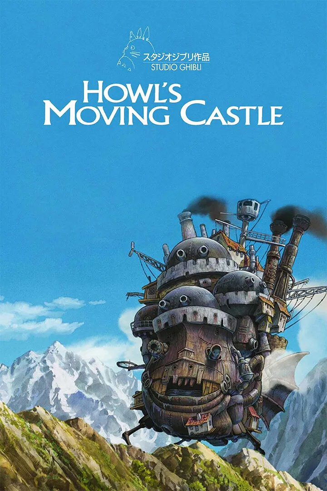

Castelo Animado
Uma bruxa lança uma maldição sobre a jovem Sophie. Desesperada, ela embarca em uma odisseia em busca do mago Howl, um misterioso feiticeiro que pode ajudá-la a reverter o feitiço.
16/08/2024
Thelma e Louise
As melhores amigas Thelma e Louise partem em uma aventura que logo se transforma em uma fuga terrível da polícia, enquanto tentam escapar dos crimes que cometeram.
15/11/1991
Aquarius
Uma jornalista aposentada defende seu apartamento, onde viveu a vida toda, do assédio de uma construtora. O plano é demolir o edifício Aquarius e dar lugar a um grande empreendimento.
01/09/2016
O Fabuloso Destino de Amelie Poulain
Amélie é uma jovem do interior que se muda para Paris. Um dia, ela encontra uma caixinha dentro de seu apartamento e decide procurar o dono. A partir daí, sua perspectiva de vida muda radicalmente.
08/02/2002
Mamma Mia!

Donna está preparando o casamento de sua filha com a ajuda de duas amigas. Enquanto isso, a noiva Sophie convida três ex-namorados de sua mãe na esperança de conhecer seu verdadeiro pai.
12/9/2008
Pobres Criaturas

Bella Baxter é trazida de volta à vida pelo cientista Dr. Godwin Baxter. Querendo ver mais do mundo, ela foge de casa e viaja pelos continentes. Livre dos preconceitos de sua época, Bella exige igualdade e libertação.
08/12/2023
La La Land

O pianista Sebastian e a atriz Mia se apaixonam perdidamente. Buscando construir uma carreira, os jovens tentam fazer o relacionamento amoroso dar certo, enquanto perseguem fama e sucesso.
13/01/2017
Tick, Tick...BOOM!
Prestes a completar 30 anos, um compositor promissor lida com o amor, a amizade e a pressão para criar algo incrível antes que o tempo acabe.
10/11/2021
Tapas e Beijos
Fátima e Sueli trabalham na Djalma Noivas, em Copacabana. Apesar de serem solteiras e independentes, ambas procuram encontrar o grande amor de suas vidas, mas os seus relacionamentos são muito tumultuados.
05/04/2011
Vidas Passadas
Dois amigos de infância sque um deles muda da Coreia do Sul para os Estados Unidos. Duas décadas depois, eles se reencontram na cidade de Nova York e confrontam noções de destino, amor e escolhas.
02/06/2023
Because It's The
First Time

Na cassa dos vinte e poucos anos, Yoon Tae-oh e seus amigos enfrentam os desafios da juventude, como o primeiro amor, sonhos e dilemas pessoais, enquanto descobrem quem são e o que querem para o futuro.
25/11/2015
Friends
Seis amigos, três homens e três mulheres, enfrentam a vida e os amores em Nova York e adoram passar o tempo livre na cafeteria Central Perk.
22/9/1994